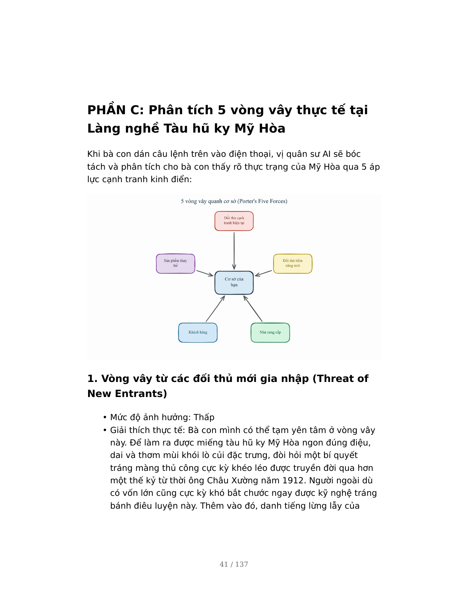

2 Chương 12: Từ 8 framework tới 1 kế hoạch: Lộ trình thực hành cho cơ sở của bạn
2.1 PHẦN 1: Kết nối những mảnh ghép – Khi 8 mô hình cùng chung một nhịp đập
Chào bạn, người bạn đồng hành quả cảm đã đi cùng tôi qua suốt hành trình khám phá tri thức của cuốn sách này. Khi đứng ở chương cuối cùng này, nhìn lại chặng đường đã qua, bạn đang cảm thấy thế nào? Liệu bạn có đang cảm thấy đầu óc mình hơi “ngợp” trước một rừng lý thuyết với đủ các tên gọi tiếng Anh như PESTEL, Porter, BMC, CJM, hay Kano? Bạn có tự hỏi: “Làm sao một cơ sở, một hợp tác xã quy mô nhỏ và vừa của mình có thể kham nổi ngần ấy mô hình quản trị mà không bị rối tung lên?”
Tôi rất hiểu nỗi lo đó của bạn. Nhưng tôi muốn bạn hãy thở phào nhẹ nhõm. Tám mô hình quản trị mà bạn vừa học không phải là tám hòn đảo nằm rời rạc, cô độc giữa đại dương, mà chúng thực chất là tám góc máy quay khác nhau cùng chiếu vào một bức tranh kinh doanh duy nhất của bạn.
Hãy tưởng tượng bạn đang xây dựng một ngôi nhà vững chãi cho cơ sở của mình. PESTEL và Porter giúp bạn khảo sát mảnh đất xung quanh xem thời tiết, sóng gió ra sao. Phân tích đối thủ giúp bạn nhìn sang nhà hàng xóm để biết họ xây cao thế nào. Phân khúc thị trường và Vision Board giúp bạn định hình xem ai sẽ là người vào ở và ngôi nhà đó sẽ mang lại giá trị ấm áp gì. Mô hình Canvas (BMC) chính là bộ khung xà gồ, cột kèo kết nối dòng tiền vững chắc. Cuối cùng, Bản đồ hành trình (CJM) và mô hình Kano là khâu hoàn thiện nội thất, mang lại sự tiện nghi và những niềm vui bất ngờ khiến người ta bước vào là không muốn rời đi.
Khi bạn hiểu rằng tất cả các mô hình này đều phục vụ cho một cái đích duy nhất là giúp bạn làm ăn bài bản hơn, giữ lửa nghề bền vững hơn, bạn sẽ thấy chúng cực kỳ dễ thương và dễ áp dụng. Việc của bạn không phải là học thuộc lòng lý thuyết, mà là biết cách nhấc chiếc điện thoại lên, biến AI thành người quân sư giúp bạn ráp nối từng mảnh ghép này lại thành một kế hoạch hành động thực chiến, ra tiền ra bạc cho cơ sở của chính mình!
2.2 PHẦN 2: Bảng tra cứu nhanh – Tám mô hình này trả lời câu hỏi gì cho bạn?
Để giúp bạn không bao giờ bị lạc lối trong “rừng chiến lược”, tôi đã đúc kết sẵn một bảng tra cứu nhanh dưới đây. Mỗi khi gặp khó khăn hay bế tắc trong sản xuất, bạn chỉ cần lật đúng trang này, đặt đúng câu hỏi cốt lõi này cho vị quân sư AI trên điện thoại của bạn:
| STT |
Tên mô hình (Framework) |
Tác giả phát minh |
Câu hỏi cốt lõi giúp bạn gỡ rối |
|---|---|---|---|
| 1 | PESTEL | Francis Aguilar | “Thế giới bên ngoài xưởng của bạn đang thay đổi thế nào và nó tác động trực tiếp gì đến túi tiền của bạn?” |
| 2 | Porter’s Five Forces | Michael Porter | “Những thế lực vô hình nào xung quanh đang trực tiếp siết chặt biên lợi nhuận và ép giá sản phẩm của bạn?” |
| 3 | Phân tích đối thủ cạnh tranh | Chuẩn quản trị | “Đối thủ lớn nhất đang bỏ quên khoảng trống thị trường nào mà một cơ sở truyền thống như bạn có thể nhảy vào làm chủ?” |
| 4 | Phân khúc thị trường | Philip Kotler | “Ai là người thực sự trân quý giá trị sản phẩm của bạn và sẵn sàng rút ví trả tiền cao nhất cho nó?” |
| 5 | Product Vision Board | Roman Pichler | “Bạn muốn đưa sản phẩm và cơ sở của mình đi đến đích đến cụ thể nào sau 3-5 năm nữa, đo lường bằng con số gì?” |
| 6 | Business Model Canvas (BMC) | Alexander Osterwalder | “Làm thế nào để kết nối 9 nguồn lực, hoạt động và đối tác của cơ sở thành một cỗ máy vận hành ra tiền trơn tru?” |
| 7 | Customer Journey Map (CJM) | Chuẩn trải nghiệm | “Khách hàng đang trải nghiệm những gì, đau đớn bực bội ở bước nào từ lúc chưa biết tên cho đến khi trung thành giới thiệu bạn?” |
| 8 | Mô hình Kano | Noriaki Kano | “Đâu là những điểm chất lượng bắt buộc phải giữ vững, và đâu là nét độc đáo khiến khách hàng bất ngờ trầm trồ?” |
2.3 PHẦN 3: Lộ trình thực hành 7 ngày – Đưa AI vào guồng chiến lược của bạn
Bây giờ, chúng ta sẽ cùng nhau bắt tay vào hành động thực tế. Tôi xin gợi ý cho bạn một lộ trình thực hành 7 ngày, mỗi ngày bạn chỉ cần dành ra đúng 30 phút rảnh rỗi bên bàn trà, cầm chiếc điện thoại lên và phối hợp cùng trợ lý AI để hoàn thiện từng bước đi chiến lược cho cơ sở của mình.
2.3.1 📅 Ngày 1 & 2: Hiểu rõ thời cuộc và Định hình vòng vây quanh cơ sở (PESTEL & Porter)
- Bạn sẽ làm gì: Bạn cần đánh giá xem những thay đổi thời tiết, chính sách, bão giá nguyên liệu (PESTEL) đang đe dọa bạn ra sao, và những áp lực ép giá từ thương lái hay nhà cung cấp (Porter) đang siết chặt bạn thế nào.
- Cách dùng công thức 6 bước:
- Định vai & Chuyên môn: Gán cho AI vai chuyên gia tư vấn kinh tế nông thôn có 15 năm kinh nghiệm.
- Bối cảnh: Mô tả thật kỹ cơ sở của bạn (Ví dụ: Bạn làm xưởng bánh tráng nướng, có 10 lao động, đang bị bão giá bột gạo và thương lái ép giá sỉ).
- Định nghĩa output & Tên artifact: Yêu cầu AI lập “Bản phân tích PESTEL của Francis Aguilar” và “Bản đánh giá 5 áp lực cạnh tranh của Michael Porter”.
- Quy tắc định dạng: Yêu cầu AI viết ngắn gọn, chia gạch đầu dòng, chỉ ra hành động ứng phó cụ thể cho từng mục.
- Sản phẩm đầu ra của ngày này: Một bảng đánh giá rủi ro môi trường bên ngoài và bản kế hoạch chủ động đối phó với sức ép ép giá của thương lái sỉ.
2.3.2 📅 Ngày 3: So găng đối thủ để tìm đường đi riêng (Phân tích đối thủ cạnh tranh)
- Bạn sẽ làm gì: Bạn so sánh trực diện sản phẩm mộc mạc của mình với các xưởng sản xuất hàng loạt, công nghiệp quy mô lớn để tìm ra điểm yếu chí mạng của họ mà bạn có thể khai thác.
- Cách dùng công thức 6 bước: Bạn gán vai cho AI là một thám tử thị trường nông sản. Trong bối cảnh, bạn nêu rõ thế mạnh thủ công của bạn và sự bành trướng giá rẻ của đối thủ công nghiệp. Yêu cầu AI xuất ra một bảng so sánh “Competitor Analysis” gồm đúng 6 mục: thị trường, chiến lược, thế mạnh, điểm yếu, cách tiếp cận, giá cả để tìm ra “khoảng trống thị trường” (gap).
- Sản phẩm đầu ra của ngày này: Một bảng so sánh sắc sảo chỉ ra đúng khoảng trống thị trường mà đối thủ lớn bỏ quên (ví dụ: phân khúc thực phẩm truyền thống sạch, không dùng chất bảo quản) mà bạn hoàn toàn làm chủ được.
2.3.3 📅 Ngày 4: Chia nhóm khách hàng để bán đúng giá (Phân khúc thị trường)
- Bạn sẽ làm gì: Bạn chia nhỏ những người mua hàng của mình thành các nhóm riêng biệt để có cách đóng gói bao bì, định giá bán và tiếp cận riêng, tránh bán chung một kiểu luộm thuộm cho tất cả mọi người.
- Cách dùng công thức 6 bước: Bạn yêu cầu AI hóa thân thành chuyên gia phân tích hành vi người tiêu dùng. Cung cấp bối cảnh về các kiểu khách đang ghé xưởng của bạn. Yêu cầu AI phác họa Bản phân khúc thị trường qua 6 tầng phụ và đặc biệt bắt AI chỉ ra một “insight bất ngờ” từ nhóm khách mua làm quà tặng.
- Sản phẩm đầu ra của ngày này: Bản phân khúc khách hàng chi tiết giúp bạn biết rõ khách lẻ cần gì, khách sỉ cần gì, và thiết kế riêng một dòng bao bì in logo nhãn hiệu bắt mắt để bán giá cao cho khách du lịch mua làm quà.
2.3.4 📅 Ngày 5: Vẽ bản đồ tương lai 3-5 năm (Product Vision Board)
- Bạn sẽ làm gì: Bạn cần thoát khỏi những lo toan vụn vặt hằng ngày để định vị xem cơ sở của mình sẽ đứng ở đâu sau 3 năm nữa, tránh việc sản xuất theo cảm tính, ăn đong từng bữa.
- Cách dùng công thức 6 bước: Bạn gán vai cho AI là chuyên gia định hình sản phẩm OCOP. Yêu cầu AI xây dựng “Bảng tầm nhìn sản phẩm của Roman Pichler” gồm: 1 câu tầm nhìn truyền cảm hứng dưới 40 từ, nhóm khách mục tiêu, nhu cầu thực tế, giải pháp sản phẩm và đặc biệt là các mục tiêu kinh doanh có con số KPI đo lường được (như sản lượng ổn định bao nhiêu, tăng trưởng doanh thu online mấy phần trăm).
- Sản phẩm đầu ra của ngày này: Một bảng tầm nhìn sản phẩm rõ ràng, truyền cảm hứng mạnh mẽ, giúp bạn và toàn bộ thành viên trong cơ sở có chung một ý chí phấn đấu.
2.3.5 📅 Ngày 6: Thiết kế cỗ máy vận hành ra tiền (Business Model Canvas)
- Bạn sẽ làm gì: Bạn đặt toàn bộ hoạt động của cơ sở lên một trang giấy duy nhất để xem các bộ phận từ đối tác, tài nguyên gia truyền, chi phí đến doanh thu có đang liên kết chặt chẽ hay không.
- Cách dùng công thức 6 bước: Bạn bắt AI đóng vai chuyên gia tái cấu trúc doanh nghiệp. Cung cấp bối cảnh toàn bộ dòng tiền, nguyên liệu, nhân công hiện tại của bạn. Yêu cầu AI lập “Business Model Canvas của Alexander Osterwalder” đi qua đủ 9 ô không được thiếu ô nào, và phân tích mối liên kết hệ thống giữa ô Giá trị cốt lõi với ô Đối tác và Cơ cấu chi phí.
- Sản phẩm đầu ra của ngày này: Bản đồ kinh doanh Canvas một trang giấy giúp bạn nhìn thấu suốt mạch máu tài chính của cơ sở để kịp thời cắt giảm chi phí thừa và mở rộng nguồn doanh thu mới.
2.3.6 📅 Ngày 7: Chạm vào trái tim khách hàng và Khiến họ trầm trồ (CJM & Kano)
- Bạn sẽ làm gì: Bạn đi theo từng bước chân của khách hàng để xóa bỏ những điểm đau (như sợ mua nhầm hàng giả), đồng thời thiết kế thêm những món quà bất ngờ (như thẻ kể chuyện truyền thống, cẩm nang nấu ăn) để khách yêu thương bạn vô bờ bến.
- Cách dùng công thức 6 bước: Bạn gán vai cho AI là chuyên gia thiết kế trải nghiệm khách hàng. Yêu cầu AI vẽ “Customer Journey Map” qua 5 giai đoạn để tìm điểm đau lớn nhất và hiến kế sửa đổi. Sau đó, tiếp tục nối lệnh nhờ AI phân loại các tính năng sản phẩm theo “Mô hình Kano” để tìm ra những điểm nhấn “phấn khích” siêu rẻ tiền nhưng cực kỳ đắt giá.
- Sản phẩm đầu ra của ngày này: Một bản lộ trình chăm sóc khách hàng từ lúc gặp gỡ đến sau khi mua, cùng một danh sách các món quà tinh thần độc đáo đi kèm gói hàng khiến khách mua một lần là nhớ thương mãi mãi.
2.4 PHẦN 4: Lời kết – Sự giao thoa giữa đôi bàn tay nghề và trí tuệ thời đại
Bạn thân mến, khi gấp lại trang sách cuối cùng này, tôi mong bạn hãy luôn nhớ về một ngọn lửa truyền cảm hứng vô cùng mạnh mẽ mà chúng ta đã cùng đi qua: câu chuyện của Làng nghề Tàu hũ ky Mỹ Hòa (Bình Minh, Vĩnh Long).
Làng nghề Mỹ Hòa đã đi qua hơn một thế kỷ thăng trầm từ năm 1912, được giữ lửa bằng đôi bàn tay khéo léo của hàng chục hộ xã viên từ thời cụ Châu Xường khởi xướng để vinh dự đạt danh hiệu Di sản văn hóa phi vật thể Quốc gia vào năm 2022 và chứng nhận OCOP 3 sao. Mỹ Hòa đã chứng minh cho cả nước thấy rằng: một làng nghề truyền thống mộc mạc ở vùng quê sông nước miền Tây hoàn toàn có thể tự tin sở hữu một nhãn hiệu tập thể được bảo hộ pháp lý vững chắc và vươn mình mạnh mẽ ra thị trường hiện đại.
Sự thành công của Mỹ Hòa hay bất kỳ một hợp tác xã bền bỉ nào khác trên đất nước mình đều được tạo nên từ hai yếu tố vàng: đó là bí quyết trăm năm nằm trong đôi bàn tay lành nghề của con người, kết hợp cùng sự nhạy bén đón đầu trí tuệ của thời đại.
Hôm nay, bạn đã có trong tay chiếc chìa khóa vạn năng – Trí tuệ nhân tạo (AI) nằm gọn trên chiếc điện thoại di động của mình. AI sẽ giúp bạn gánh vác phần tính toán sổ sách, lập chiến lược, viết bài quảng bá để giải phóng bớt nhọc nhằn cho bạn. Nhưng linh hồn của sản phẩm, chất lượng sạch sẽ không hóa chất và tình cảm mến khách mộc mạc quê hương vẫn mãi mãi nằm ở đôi bàn tay và trái tim nồng hậu của chính bạn.
Đừng ngần ngại nữa! Ngay ngày mai, hãy bắt đầu Ngày thứ nhất trong lộ trình 7 ngày của bạn. Hãy bật chiếc điện thoại lên, nhóm lại ngọn lửa lò sấy của cơ sở mình, và cùng vị quân sư AI đưa đặc sản quê hương bạn tự tin vươn xa, gặt hái những mùa quả ngọt thành công rực rỡ!
Chúc bạn và hợp tác xã của mình luôn đỏ lửa, vạn sự hanh thông và đắt hàng như tôm tươi!
📖 Cuộn xuống dưới để lật mở phần Phụ lục đặc biệt: Nơi đóng gói sẵn toàn bộ các mẫu câu lệnh (prompt) thực chiến siêu chuẩn để bạn chỉ việc “điền vào chỗ trống” và dán vào điện thoại dùng ngay hôm nay!
